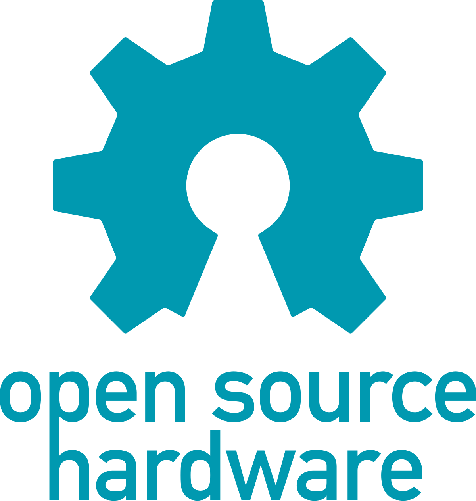

Co je to licence?
Uživatel nemůže koupit program jako celek se všemi právy k němu, ale může získat pouze licenci (oprávnění) k jeho užívání. Z toho plyne, že nesmí žádným způsobem upravovat toto dílo, pokud k tomu autor nedá svůj výslovný souhlas. Licence je většinou nepřenosná, a proto není možné tuto licenci někomu dalšímu prodat nebo darovat.
Closed Source
Komerční software. Často se používá rovněž označení proprietární software nebo také software s uzavřeným kódem (closed source). Jeho autor upravuje licencí (typicky EULA - End-User-License-Agreement) či jiným způ- sobem možnosti jeho používání. K takovému software nejsou zpravidla k dis pozici volně zdrojové kódy či v nich nelze svobodně dělat úpravy a výsledné dílo distribuovat. Je šířen za úplatu a bývá omezen počet instalací, přenositel- nost licence či právo modifikace produktu.
Některé typy licencí
Multilicence
Při koupi programu běžně získává uživatel oprávnění provozo- vat program na jednom počítači. V případech hromadného využití programu (firmy, školy ...) stačí koupit jedno balení programu a k němu vícenásobnou licenci pro další počítače, která bývá cenově výhodnější variantou.
OEM
OEM (Original Equipment Manufacturer = původní výrobce zařízení). Touto zkratkou se označují výrobky, které jsou určeny k zabudování jako komponenty (součásti) do jiných zařízení. Jedná se například o programy, které jsou nabízeny pouze současně s hardware za sníženou cenu.
Freeware
Doslova lze název této skupiny programů přeložit jako volné zboží. Program je možné používat a rozšiřovat zdarma, požaduje se pouze dodržování autorských práv. Nesmí se zahrnovat do komerčně šířených programů a nesmí být změněn. Někdy je jako freeware šířen i velmi kvalitní program a po jeho hromadném rozšíření se z něj může stát program šířený komerčně.
Shareware
S programem může uživatel pracovat a po určité době je povinnen zaslat jeho autorovi uvedený poplatek. Poté smí program legálně užívat a autor k němu často pošle stručný manuál, případně i novou verzi programu.
Trial verze
Jedná se o komerční software, u kterého je časově omezena určitá funkce např. ukládání, tisk apod. Smyslem této licence je umožnit potencionálnímu zájemci si vyzkoušet ovladání programu a různých funkci před zakoupením plné verze. Zvyklostí bývá označovat časově omezenou verzi Trial a verzi omezenou funkčností Demo.
Open Source
Znamená doslova otevřený zdroj. Takové programy musí být vždy šířeny i s uvedením zdrojových textů, takže každý (kdo má patřičné znalosti) může přesně zjistit, jak takový program funguje. Každý ho také může vylepšit, opravit v něm chybu, použít ho ve svém programu, vždy však musí takový produkt opět distribuovat jako Open Source.
GNU GPL
Přesné podmínky pak stanovuje licence GPL (General Public Licence - všeobecná veřejná licence). Nejrozšířenější takovou licencí je GNU/GPL (GNU General Public Licence). Prvními vývojáři byli nadšenci z prostředí především amerických univerzit, studenti i zaměstnanci, a dodnes je akademická půda silnou základnou Open Source.Mnoho komerčních firem platí své vývojáře za práci na Open Source a přispívá finančně celé komunitě. Vlády některých zemí (např. Číny a Japonska) sledují se znepokojením dominanci firmy Microsoft na poli softwaru a podporují vysokými částkami vývoj volně šiřitelného softwaru, který pak mohou jejich občané používat bez nákupu drahých komerčních sys- témů.Softwarové licence
MIT
Licence podobná BSD licenci umožňuje se software nakládat téměř libovolně (používat, kopírovat, modifikovat, slučovat, publikovat, distribuovat či prodávat), jedinou podmínkou je zahrnutí textu licence do všech kopií a odvozenin software.
Přehled využívaných programů
| Typ programů | Komerční software | Open source |
|---|---|---|
| Kancelářský | Office 365 | Libre Office |
| Grafický | Adobe Photoshop | Krita, GIMP |
| Síťový | MS Outlook, Zoom | Brave, Firefox |
| IDE | CLion, Visual Studio | Visual Studio Code |
.